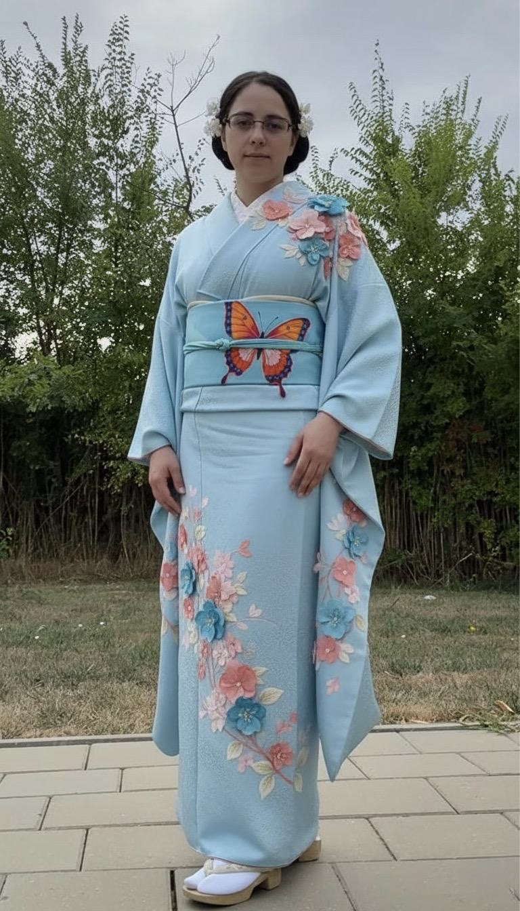

Kimono: O Odă Eleganței Eterne

O reprezentare vizuală a grației și istoriei unui kimono .
Bun venit pe prima mea pagină de blog! Sunt extrem de entuziasmată să împărtășesc cu voi primul meu subiect: minunata lume a kimonourilor. Această piesă vestimentară iconică este mult mai mult decât o simplă haină; este o operă de artă, o poveste țesută în mătase și o expresie profundă a culturii japoneze .
Ce este un kimono?
Kimono-ul ("lucrul de purtat") este veșmântul național al Japoniei, purtat de secole. Caracterizat prin croiala sa în formă de "T", mâneci largi și o lungime ce ajunge până la gleznă, acesta este închis cu un cordon lat numit "obi". Deși în ziua de azi este purtat mai ales la ocazii speciale, precum nunți, ceremonii de ceai sau festivaluri, eleganța și simbolismul său rămân la fel de puternice.
Design și Simbolism
Fiecare kimono este o pânză pentru artă, iar motivele sale nu sunt alese întâmplător. Flori precum cireșii (sakura), bujorii sau crizantemele, păsări precum cocorii, sau elemente naturale ca valurile și norii sunt adesea întâlnite, fiecare purtând semnificații profunde legate de anotimpuri, longevitate, noroc sau frumusețe. Materialele, de la mătase fină la bumbac, și tehnicile de vopsire și broderie, transformă fiecare kimono într-o capodoperă unică.
Mai mult decât o ținută
A purta un kimono este o experiență în sine, un ritual ce implică nu doar îmbrăcarea, ci și modul în care este aranjat, accesoriile și chiar postura celei care îl poartă. Reprezintă o legătură cu tradiția, un respect față de estetică și o celebrare a rafinamentului. Este o dovadă vie a frumuseții care transcende timpul și tendințele.
Sper că v-a plăcut această incursiune rapidă în lumea kimono-urilor! Sunt curioasă să aflu ce părere aveți.